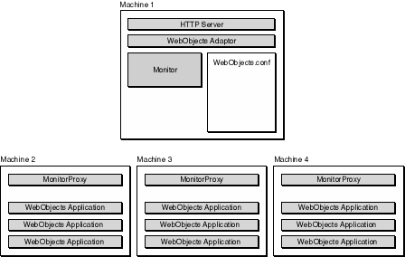

Serving WebObjects
PATH
WebObjects 4.0 Documentation >
Serving WebObjects
 Table of Contents
Table of Contents  Previous Section
Previous Section
Deploying on Multiple Hosts
Creating a deployment environment sometimes involves more than one HTTP server and many WebObjects application instances running on each server. The Monitor application is designed to run on a single machine. Thus there can only be one copy of Monitor running at a time and managing the same set of hosts. To make several hosts available to Monitor, a service called MonitorProxy must be running. With a MonitorProxy running the Monitor application can remotely administer a host machine.
A large WebObjects deployment could be depicted as in the following diagram:

Machine 1 acts as the web server and load balancer between all the application servers running on Machines 2, 3, and 4. You should run Monitor on the same host as the web server and the WebObjects adaptor since Monitor is involved in modifying and updating the WebObjects.conf file. which the adaptor uses to find instances.
Table of Contents  Next Section
Next Section